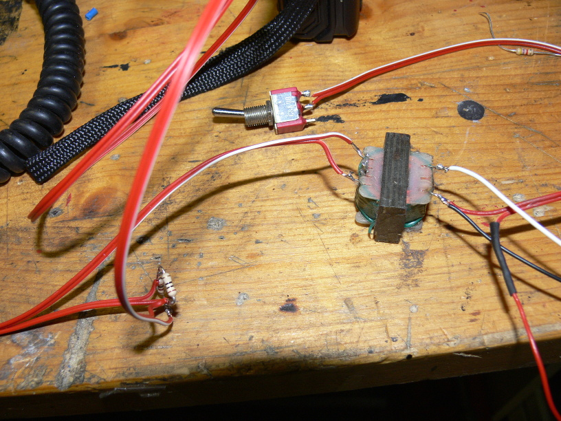

Radio setup
To emulate a base station, you need a linux machine with sound interface. The interface must be supported by Alsa kernel driver.

Use a radio transmitter for 2-meter band to transmit to the phone (downlink).
An amateur radio can be used, but be sure it is not limited to amateur radio frequencies.
For A-Netz the transmitter must be able to transmit arround 162 MHz.
For B-Netz the transmitter must be able to transmit arround 153 MHz.

Use radio receiver for 2-methers band to receive from the phone. (uplink)
You cannot use the transmitter as well, since you need to transmit and receive simultaniously.
For A-Netz the receiver must be able to receive arround 162 MHz and 157 MHz.
For B-Netz the receiver must be able to receive arround 153 MHz and 148 MHz.
The reason why the receiver must also receive on the transmitter frequency (downlink) is because you need to make a test loop for calibration process.
This is explained below.

In order to keep RF emission low, use a dummy load for lab test.
Use two seperated antennas for outside use of the mobile phone.
Connect one dummy load to the transmitter and another one to the mobile phone's antenna connector.

For the radios and the phone, I use a sufficient power supply.
Especially for old A-Netz phones, be sure to have something close to 13.8 Volts and 5 Ampere or even more, depending on your phone.
My phone did not work correctly with a standard 12 Volts regulated power supply.
Amateur radio power supplies are made for 13.8 Volts.
Also you can use a fully charged car battery with a sufficient fuse.
In my case I use a modified ATX-2 power supply with 13.8 Volts and a built-in overcurrent protection.

And finally you need a classic working phone.
Be sure to connect the phone to a dummy load and the transmitter to another one.

There are two ways to couple the receiver and transmitter with your sound card. You can use a headset and a microphone. The pro is that you can monitor what you actually transmitting and receiving. The problem is that you might get audio from RX side mixed with TX side. You get echo and the base station may detect self-generated tones. This might cause malfuntion to the base station software. Better you put the microphone inside a headset and keep TX and RX side away from each other.

The better way is to use inductive coil and resistors.
How to couple your sound card with radios is beyond the scope of this document.
Because you have radios and all the electronics that is required, I assume you have the knowledge to do it right.

To adjust input and output levels of your sound card, run 'alsamixer'.

To avoid echo of audio input (mic), mute the input (select item and press 'm').
We want to capture microphone, but not echo it back to the audio output.
Also we want audio on line/headset output and capture from microphone imput.
Now we want to calibrate transmitter and receiver audio level.
Run the B-Netz base station in loopback test mode (-L 2).
Even if you plan to setup A-Netz base station, use B-Netz base station for calibration.
# src/bnetz/bnetz -k 1 -L 2
bnetz.c:268 info : Entering IDLE state, sending 'Gruppenfreisignal' 2 on channel 1.
Base station ready, please tune transmitter to 153.010 MHz and receiver to 148.410 MHz.
To call phone, switch transmitter using pilot tone to 153.370 MHz
Tune your transmitter AND reciever to 153.010 MHz.
Press the PTT button on you transmitter and check if you hear your voice at a normal level from the receiver.
Then connect the audio output (line out) to your transmitter or couple it with a headphone.
You should hear now the whistle sound clearly on the receiver.
Adjust the audio output, so that the tone is not overdriven but loud enough to match any regular received voice.
Now connect the audio input (microphone) to your receiver or couple it with a microphone to the speaker of your receiver.
Enable the transmitter. (PTT button)
You should now see the signal beeing decoded by the base station:
bnetz.c:474 notice : Received telegramm 'Ziffer 2'. (quality=99% level=33%)
bnetz.c:478 notice : Round trip delay is 0.053 seconds
bnetz.c:474 notice : Received telegramm 'Ziffer 3'. (quality=98% level=33%)
bnetz.c:478 notice : Round trip delay is 0.054 seconds
bnetz.c:474 notice : Received telegramm 'Ziffer 4'. (quality=99% level=31%)
bnetz.c:478 notice : Round trip delay is 0.053 seconds
bnetz.c:474 notice : Received telegramm 'Ziffer 5'. (quality=97% level=30%)
bnetz.c:478 notice : Round trip delay is 0.054 seconds
Adjust the input level. (using 'alsamixer')
Try to maintain an input level arround 30%.
The quality should be 90% or better.
Now you have connected the base station to your radio eqipment and roughly adjusted the levels.
Finally store the settings using "alsactl store" command.
Do this whenever you want to keep your adjustments.
[Back to main page]
|